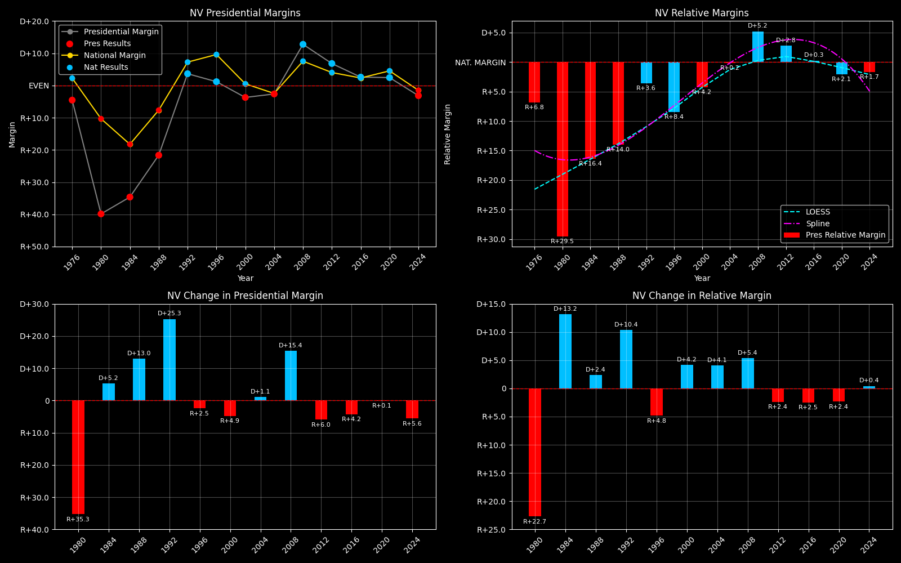

← Back to Map

Nevada (NV) statewide
Nevada (NV) — Data
| Year | EVs | D | R | Margin | Rel. Margin | Nat. Margin | Margin Δ | Rel. Margin Δ | Nat. Margin Δ | Other votes | Total votes |
|---|
| 1968 | 3 | 60,598(39.3%) | 73,188(47.5%) | R+9.4 | R+8.7 | R+0.7 | | | | 20,432(13.2%) | 154,218 |
| 1972 | 3 | 66,016(36.3%) | 115,750(63.7%) | R+27.4 | R+3.8 | R+23.6 | R+18.0 | D+4.9 | R+22.9 | 0(0.0%) | 181,766 |
| 1976 | 3 | 92,479(45.8%) | 101,273(50.2%) | R+4.5 | R+6.7 | D+2.2 | D+22.8 | R+2.9 | D+25.8 | 8,124(4.0%) | 201,876 |
| 1980 | 3 | 66,666(26.9%) | 155,017(62.5%) | R+39.9 | R+29.2 | R+10.6 | R+35.3 | R+22.5 | R+12.8 | 26,202(10.6%) | 247,885 |
| 1984 | 4 | 91,655(32.7%) | 188,770(67.3%) | R+34.6 | R+16.5 | R+18.1 | D+5.2 | D+12.7 | R+7.5 | 0(0.0%) | 280,425 |
| 1988 | 4 | 132,738(37.9%) | 206,040(58.9%) | R+21.6 | R+13.9 | R+7.8 | D+13.0 | D+2.6 | D+10.4 | 11,289(3.2%) | 350,067 |
| 1992 | 4 | 189,148(38.0%) | 175,828(35.3%) | D+3.6 | R+3.3 | D+6.9 | D+25.3 | D+10.6 | D+14.7 | 132,580(26.6%) | 497,556 |
| 1996 | 4 | 203,974(43.9%) | 199,244(42.9%) | D+1.2 | R+8.3 | D+9.5 | R+2.5 | R+5.0 | D+2.6 | 61,116(13.2%) | 464,334 |
| 2000 | 4 | 279,978(46.2%) | 301,575(49.8%) | R+3.7 | R+4.2 | D+0.5 | R+4.9 | D+4.0 | R+8.9 | 24,102(4.0%) | 605,655 |
| 2004 | 5 | 397,093(47.9%) | 418,557(50.5%) | R+2.6 | R+0.1 | R+2.5 | D+1.1 | D+4.1 | R+3.0 | 13,706(1.7%) | 829,356 |
| 2008 | 5 | 533,648(55.2%) | 412,700(42.7%) | D+12.8 | D+5.4 | D+7.4 | D+15.4 | D+5.6 | D+9.8 | 21,272(2.2%) | 967,620 |
| 2012 | 6 | 531,372(52.4%) | 463,568(45.7%) | D+6.8 | D+2.9 | D+3.9 | R+6.0 | R+2.5 | R+3.4 | 19,978(2.0%) | 1,014,918 |
| 2016 | 6 | 539,261(47.9%) | 512,059(45.5%) | D+2.6 | D+0.4 | D+2.2 | R+4.2 | R+2.5 | R+1.7 | 74,065(6.6%) | 1,125,385 |
| 2020 | 6 | 703,438(50.1%) | 669,834(47.7%) | D+2.4 | R+2.1 | D+4.5 | R+0.1 | R+2.4 | D+2.3 | 32,062(2.3%) | 1,405,334 |
| 2024 | 6 | 705,197(47.5%) | 751,205(50.6%) | R+3.2 | R+1.6 | R+1.6 | R+5.6 | D+0.5 | R+6.1 | 28,438(1.9%) | 1,484,840 |
Column explanations
- Year
- Election year.
- EVs
- Number of electoral votes allocated to this state or unit.
- D
- Number of votes for the Democratic candidate (raw count).
- R
- Number of votes for the Republican candidate (raw count).
- Margin
- Margin between the two major-party candidates ((D - R)/(D + R)).
- Rel. Margin
- The presidential margin relative to the national presidential margin (Margin - Nat. Margin).
- Nat. Margin
- The national presidential margin for that year ((D_total - R_total)/(D_total + R_total)).
- Δ
- Change (delta) in the value from the previous election year. Blank if no data for previous year.
- Other votes
- Number of votes for third-party (other) candidates (raw count).
- Total votes
- Total voter turnout or ballots cast (when provided).